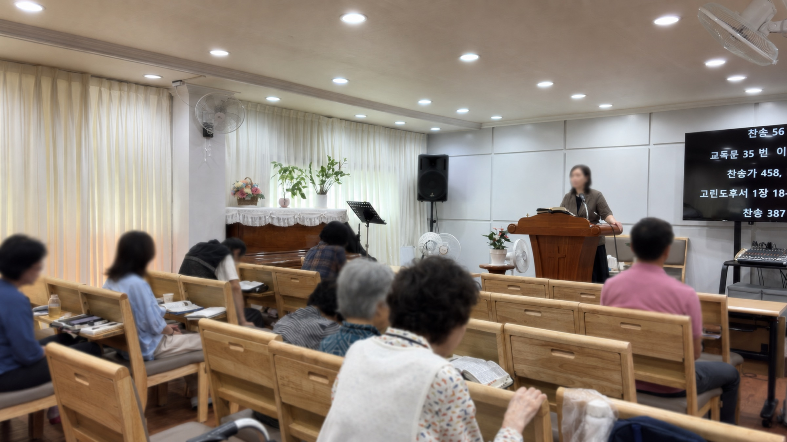
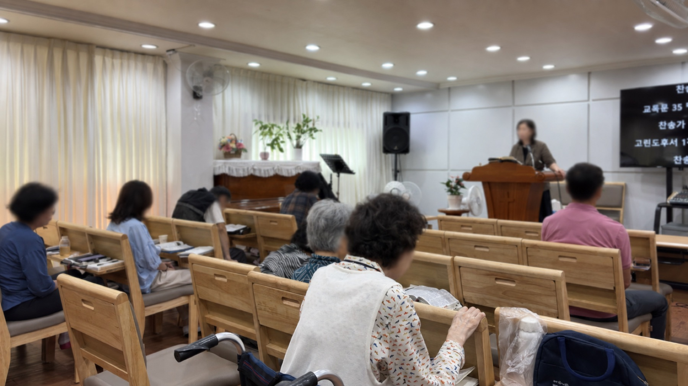
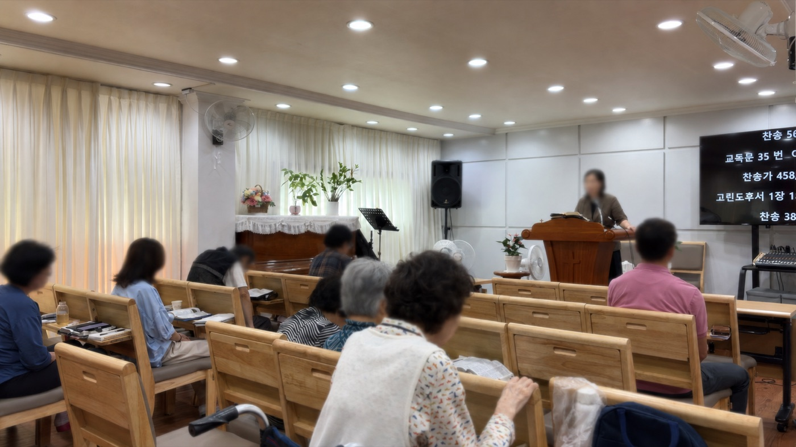

대구 감삼동, 이곳에서 함께하는 믿음교회 알아보기
01 / OUR CHURCH
하나님의 사랑 안에서,
다시 소망을 만나는 곳.

함께 예배하고,함께 걸어갑니다.

우리 큰소망교회를 소개합니다.
큰소망교회는 2008년 9월 대구 감삼동에서 시작되었습니다. 대한예수교장로회 합동개혁에 소속되어, 교역자와 성도가 함께 헌신하며 복음을 전하는 교회입니다.
믿음과 소망과 사랑으로 충만하기를 힘쓰며, 하나님의 사랑 안에서 삶의 회복과 마음의 치유를 함께 구합니다.
01
사랑
하나님의 사랑을
함께 나눕니다.
02
회복
삶의 자리에서
회복을 구합니다.
03
치유
주님 안에서
강건함을 소망합니다.
사랑하는 자여 네 영혼이 잘 됨같이
요한3서 1장 2절
네가 범사에 잘되고 강건하기를 내가 간구하노라
| 예배 및 모임 | 요일 | 시간 |
|---|---|---|
| 주일 오전 예배 | 주일 | 10:50–12:20 |
| 주일 오후 예배 | 주일 | 13:00–14:00 |
| 수요 예배 | 수요일 | 20:00–21:00 |
| 금요 기도회 | 금요일 | 20:00–21:00 |
주일 오전 예배 후에는 함께 점심 식사를 나눕니다.
예배 일정이 변경될 수 있으니 방문 전 전화로 확인해 주세요.
04 / VISIT US
큰소망교회로 오세요.
함께 예배드릴 여러분을 기다립니다.
지하철
2 감삼역 2번 출구
교회까지 걸어서 약 6분 거리입니다.
버스
두류정수사업소 · 감삼초등학교
가까운 정류장에서 내리신 후 걸어오실 수 있습니다. 이용 노선과 도착 정보는 지도 앱에서 확인해 주세요.
방문 안내
교회에 전화하기053-521-2843 이동에 도움이 필요하신가요?
교회 입구의 턱을 위한 이동식 경사로가 준비되어 있습니다. 휠체어 이용 시 방문 전에 연락해 주세요.